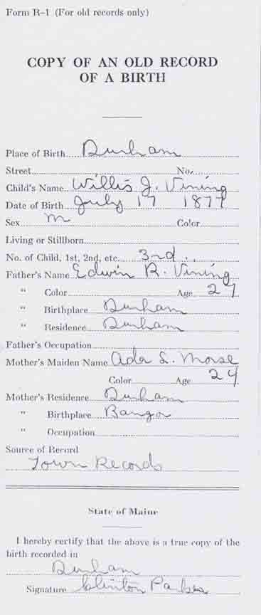
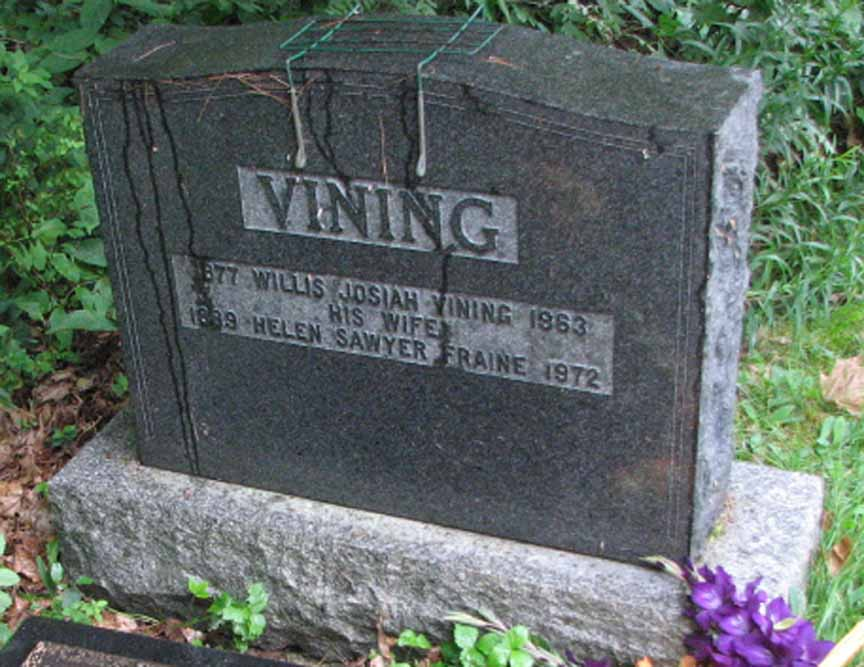

Documentation for Willis Josiah Vining - Helen Sawyer Fraine
Birth Data
Birth record for Willis Josiah Vining (from Maine State Archives files):

Death Data
Headstone for Willis Josiah Vining and Helen Sawyer (Fraine) Vining, in St. Peter's Cemetery, Woodman's Point, New Brunswick:
